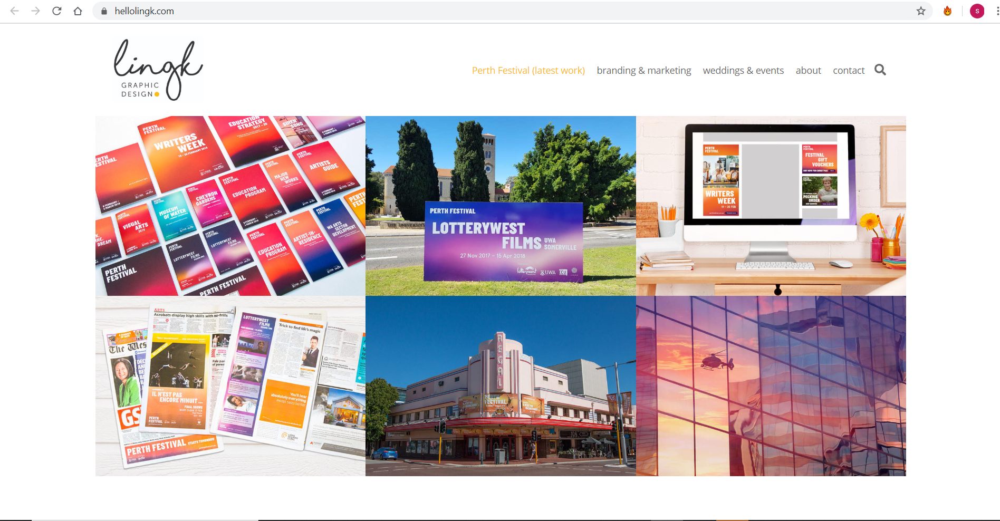
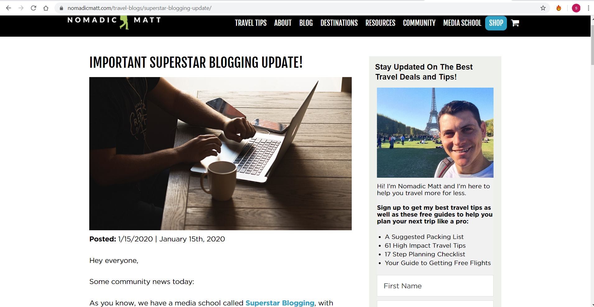
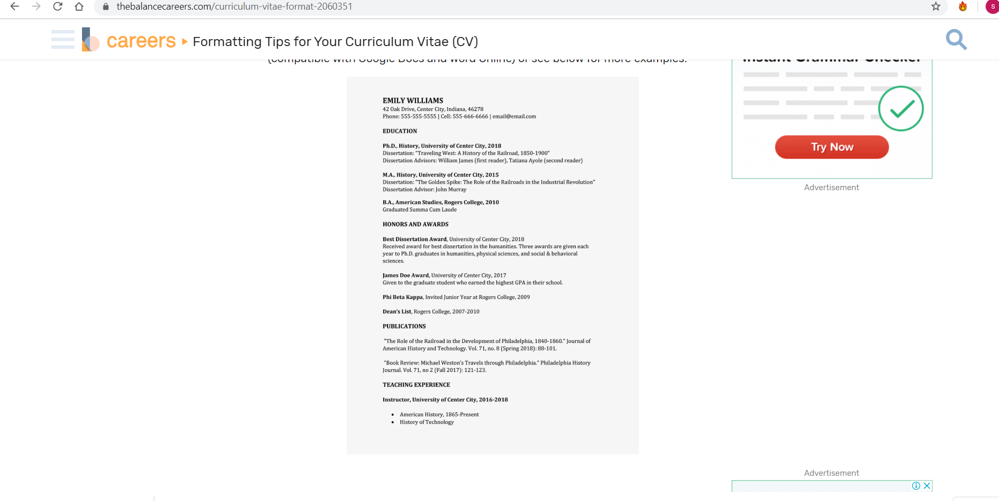
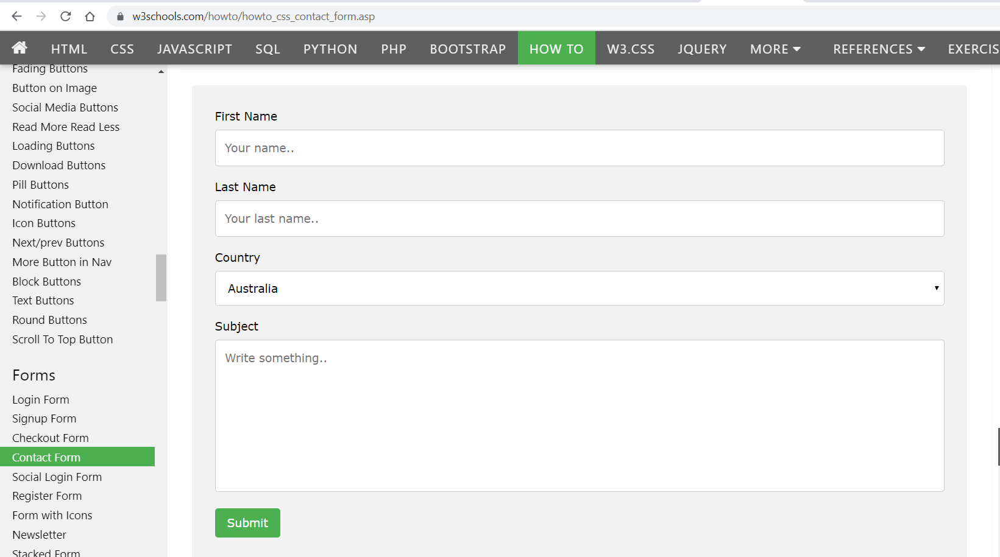
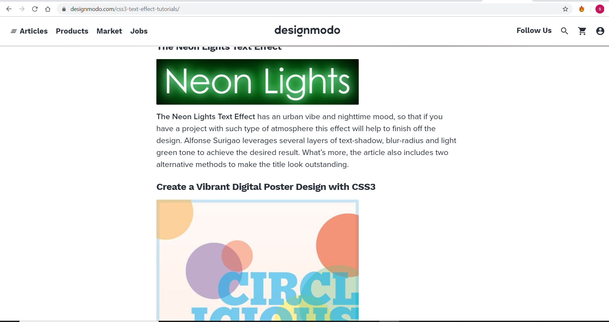

Research section
|  |
While making my own portfolio i was quite confused about the navigation bars,background and the text.So,i did research from this site and got knowledge about how to make my webpage look standard.This webpage really helped me to get a general concept about the home page of the webpage and how to make it look attractive.The one thing that caught my eye in this website was its hoover effect so i also added a hoover effect in my website to make it look good and unique. |
|---|
|  |
While doing web browsing i found this blog page in the internet.By looking at this web i got a lot of ideas about creating the blog page.I got the idea of putting the contents after the picture in a blog page.Furthermore,I also got the idea of writing the date before starting the blog from this site. |
|  |
While searching for a cv format in the internet i found this in a website.I personally liked the design of the cv so i decided to write my cv by following the same format. |
|  |
I made my contact form by taking refrence from this site.The boxes on the fill up form were quite standard and they were quite responsive. I also got the concept of adding the message box from this site as it will make the web unique.With the help of the javascript the pop up feature is also added. |
|  |
I got the idea of making my website more attractive by adding effects from this website.Through the the help of this website i added the neon light in my home page on the text. |